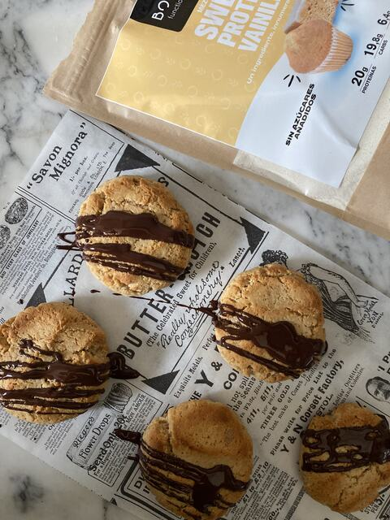
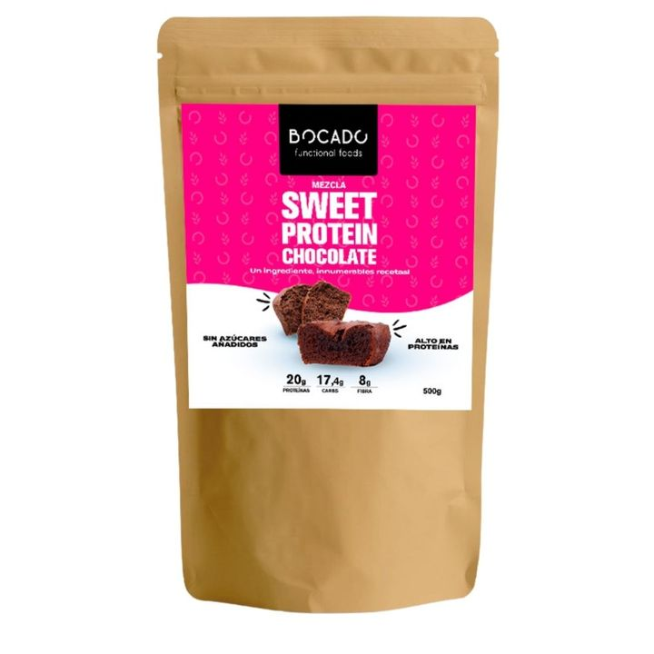

Recepta · Postres · 25 min aprox.
Galetes Sweet Protein
Prepara galetes Sweet Protein amb Sweet Protein Chocolate: una recepta fàcil que tindràs a punt en uns 25 minuts. Porta 1 cullerada de crema de cacauet, 1 raig d’oli d’oliva verge extra (opcional) i 6 cullerades de llet, i és perfecta per a un berenar o unes postres. Sweet Protein Chocolate aporta 20 g de proteïna per cada 100 g de producte acabat.
4 ingredients4 passos25 min aprox.

Feta ambSweet Protein Chocolate500 gVeure producteIngredients
- 1 tassa de barreja Sweet Protein Chocolate
- 1 cullerada de crema de cacauet
- 1 raig d’oli d’oliva verge extra (opcional)
- 6 cullerades de llet
Informació nutricionalGairebé 40 g de proteïna, sense sucres afegits, rica en fibra i greixos saludables
Preparació
- 01Integrar tots els ingredients amb una espàtula i després amb les mans
- 02Donar forma a les galetes
- 03Coure al forn 8 minuts a 200 °C
- 04Opcional: banyar-les en xocolata